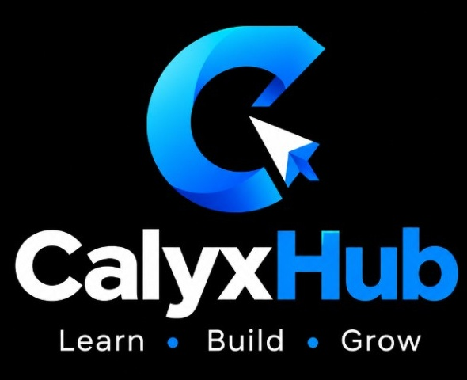

Programming
Python fundamentals, Visual Basic and logical problem solving.

COMPUTER SCIENCE • CREATIVE TECHNOLOGY
I'm Daniel Wachira — a Computer Science student building practical digital solutions through web development, networking, databases and design.
01 / ABOUT ME
I enjoy understanding how technology works and using that knowledge to create things people can actually use. My interests range from writing code and building websites to computer systems, networking and visual design.
I'm growing my skills through coursework, hands-on practice and personal projects. I value clean design, simple user experiences and learning by building.
02 / WHAT I DO
Practical skills I'm developing and applying across classwork and personal projects.
Python fundamentals, Visual Basic and logical problem solving.
Building responsive websites and working with front-end technologies.
Creating tables, writing SQL queries and learning application connectivity.
Network fundamentals, configuration practice and troubleshooting.
Computer organization, operating systems and basic hardware support.
Visual communication, graphics and everyday office productivity tools.
03 / SELECTED WORK
A selection of personal and learning projects. Some are works in progress.

WEB PLATFORM
A resource hub concept for technology tips, tutorials, notes and useful digital resources.

WEB APPLICATION • IN PROGRESS
A location-sharing concept focused on clear user consent and sharing a device's own GPS location.

COMMUNITY PROJECT
A church website concept for service information, announcements, media and online giving details.

ACADEMIC PRACTICE
Practising student records, SQL queries and connecting a Visual Basic application to SQL Server.
04 / PRACTICAL EXPOSURE
Hands-on exposure to technology environments, support work and real-world systems.
TECHNICAL ENVIRONMENT
Exposure to broadcast technology environments, including server-room systems and the technical infrastructure that supports station operations.
ICT DEPARTMENT
ICT department exposure, building familiarity with information technology support and organizational ICT operations.
IT SUPPORT & MEDIA
Practical exposure connected to IT support and media-related work.
05 / LEARNING JOURNEY
2024 — 2027
Kiambu National Polytechnic
Building foundations in programming, databases, networking, computer systems and mathematics.ONGOING
Personal projects & practical exercises
Applying classroom knowledge to websites, database applications and real-world technology challenges.05 / GET IN TOUCH
I'm open to learning opportunities, collaborations, projects and conversations about technology.